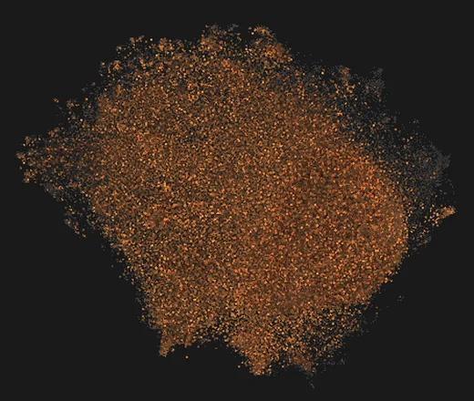

Grafting Neural Primitives Across Model Scales
In place of a model’s own calculation neurons, another model’s restore 94% of its accuracy. Added beside them, they lift its arithmetic to 102% of the donor’s. Across a 5× difference in width, shuffled weights do as well.
Lesioning one group of neurons leaves Qwen3.5-4B with 5% of its GSM8K accuracy and 99% of its HellaSwag
A lesion shows that a model needs a set of neurons. It does not show that the set is a part, a unit that would do its job anywhere else. We test that by moving one set of neurons between models, further each time, and measuring how much of it arrives.
The set comes from the Encyclopedia of LLM homologies [1], which places every MLP neuron of a model by the neurons it fires with. One group fires on equals signs and on results as they are worked out. Each Qwen model [2] we use has it: 3,948 neurons in Qwen3.5-2B, 6,857 in the 4B, 8,713 in the 9B and 22,025 in Qwen3.8-27B. We call it the calculation group, and we call a set that keeps its function through a move a primitive.
Holding the 4B’s 6,857 calculation neurons, 2.3% of its MLP neurons, at their mean activations takes GSM8K [3] from 89.6% to 4.8%, which is 5% of the intact model’s score. Exact arithmetic, 200 five-shot problems in five families (sums and differences, expressions, products, fractions and greatest common divisors), falls to 1%. HellaSwag [4] stays at 99%.
Every result below is given two ways: as a percentage of the intact host’s score, which we call the baseline, and as a percentage of the donor’s own score on the same test. Each graft is also repeated with the donor’s weights shuffled inside each weight matrix, which keeps their distribution and destroys what was learned. What the real weights add over the shuffled ones is how much of the circuit arrived (Figure 1).
The donor’s neurons keep their own weights and wiring, and only the interface is trained
The host has residual width dH and the donor dD. Each donor layer m runs inside one host layer h, chosen by relative depth. At that layer, with host stream xH and donor stream sD:
Δ = fD(u; α, τ), sD ← sD + Δ
xH ← xH + β (B0 + UBVBT) Δ
- Read. A0 is a ridge regression from the host’s residual stream to the donor’s, fitted on paired activations and then frozen. UAVAT is a trained low-rank correction.
- Run. fD is the donor’s neurons or attention heads with their own weights. A trained gain α and threshold τ for each neuron are the only changes to them.
- Keep the donor’s wiring. What the donor’s units write for one another accumulates in sD, in the donor’s coordinates. Connections inside the graft are therefore exactly the donor’s.
- Write. B0 is the fitted map back to the host and UBVBT its trained correction. When the graft is added to an intact host the scale β starts at zero, so at step 0 the grafted model’s logits equal the host’s.
- Train. The loss is a KL divergence to two teachers in equal parts. On the donor’s own correct solutions to math problems the target is the donor’s next-token distribution. On general text it is the intact host’s. Only the interface receives gradients, and a checksum confirms the host’s weights are unchanged afterwards.
A graft is used in one of two ways. To replace, the host’s own group is first lesioned by holding each of its neurons at its mean activation, and the donor’s group stands in for it. To add, the host is left whole.
Table 1. The four steps. Width is the residual width of the donor and of the host. Trained parameters are the interface, with their share of the host’s parameters.
| Donor and host | Mode | Width | Grafted | Trained parameters | Steps |
|---|---|---|---|---|---|
| Qwen3.5-9B into 4B | replace | 4,096 into 2,560 | 8,713 neurons for 6,857 | 445,490 (0.011%) | 450 |
| Qwen3.5-4B into 2B | replace | 2,560 into 2,048 | 6,857 neurons for 3,948 | 2,913,714 (0.15%) | 1,500 |
| Qwen3.5-4B into 2B | add | 2,560 into 2,048 | 6,857 neurons | 2,700,722 (0.14%) | 1,500 |
| Qwen3.8-27B into Qwen3.5-0.8B | add | 5,120 into 1,024 | 3,816 to 19,435 neurons, 16 heads | 1.97M to 5.54M (0.26% to 0.74%) | 1,600 |
A sibling’s group in its place brings the 4B back to 94% of baseline, and shuffled weights to 42%
Qwen3.5-9B and the 4B share ancestry: a neuron of one has its closest match in the same layer of the other [1]. With the 9B’s 8,713 calculation neurons in place of the 4B’s own and only the fitted maps, before any gradient step, GSM8K is at 60% of baseline. Training 445,490 parameters on the write side, 0.011% of the 4B, brings it to 94% of baseline, which is 89% of the 9B’s own score. Exact arithmetic comes back to 79% of baseline and 69% of the donor (Figure 3).
The same interface around shuffled weights, with twice the trained parameters, reaches 42% of baseline. The graft solves 119 problems the control misses and misses 3 it solves (McNemar p = 1.1 × 10−31 [5]). Around an equal number of the 9B’s prose neurons it reaches 38%. Neuron surgery [6] reports every step of this experiment.
GSM8K, 250 problems
Exact arithmetic, 200 problems
A separately trained model’s group brings the 2B back to 68% of baseline, which is 54% of the donor
Qwen3.5-2B was trained separately from the 4B. Lesioning its 3,948 calculation neurons leaves GSM8K at 1% of baseline. The 4B’s group in their place brings it to 68% of baseline and 54% of the 4B’s own score, and exact arithmetic to 57% of baseline (Figure 4).
The calculation group is MLP neurons only. To move the attention that feeds it too, we lesioned the 18 attention and Gated DeltaNet heads of the 2B that are most selective for math and ran 32 heads of the 4B in the donor stream. On math the model moved closer to the 4B: KL from the 4B on its own solutions fell 35%. GSM8K did not improve, at 62% of baseline against 68% (p = 0.10), and KL from the 2B on general text rose 1.7 times. With shuffled weights the same graft reaches 20% of baseline (p = 4.2 × 10−33).
The 2B has 8 query heads in a full-attention layer, and the heads that serve math also serve other text. Lesioning the 18 heads on top of the calculation group, before any graft, raises KL on general text from 0.092 to 0.227. A head is not something the host can spare, so every later step adds to the host and lesions nothing.
GSM8K, 500 problems
Exact arithmetic, 200 problems
Added beside an intact 2B, the 4B’s group lifts exact arithmetic to 124% of baseline and 102% of the donor
The 4B’s group now runs beside the 2B’s own. The write map starts at zero, so before training the model is exactly the 2B. Training changes 2,700,722 interface parameters, 0.14% of the 2B, over 1,500 steps.
The intact 2B solves 44.0% of the exact-arithmetic problems and the grafted 2B 54.5%. That is 124% of baseline, with 39 problems gained and 18 lost (p = 0.0075), and 102% of the 4B’s 53.5% (p = 0.87 against the donor).
With shuffled weights the graft reaches 114% of baseline. A LoRA [7] on the 2B’s own MLPs, with 2,752,512 trained parameters and no donor, reaches 113%. Neither is significantly above baseline (p = 0.14 and 0.18). Against the shuffled graft the real one gains 14 problems and loses 5 (p = 0.064). The host still has its own calculation group here, so less rests on the donor’s.
Other text is left alone. KL from the intact 2B on general text is 0.0017 for the graft and 0.0054 for the LoRA, and HellaSwag is at 99% of baseline. GSM8K is at 104% of baseline and 83% of the donor. The calculation group carries arithmetic, and most of the 4B’s lead on word problems lies outside it.
Exact arithmetic, 200 problems
GSM8K, 500 problems
Across a 36× size gap the 0.8B still gains, to 144% of its baseline arithmetic, and shuffled weights gain as much
Qwen3.8-27B has 26.90 billion text parameters, 64 layers and a residual width of 5,120. Qwen3.5-0.8B has 0.75 billion, 24 layers and a width of 1,024. Donor layer m runs inside host layer round(23m / 63), and the donor stream is 5,120 wide, so the 27B’s neurons never reach one another through the narrower host.
Full maps between widths of 5,120 and 1,024 at every layer would hold 839 million parameters, more than the 0.8B itself. We store each fitted map at rank 64, taking the approximation that is best under the covariance of the host’s activations. The maps then hold 63 million parameters, 13.3 times fewer. Each graft trains for 1,600 steps on 1,291 of the 27B’s own correct solutions to GSM8K training problems and generated arithmetic, and on general text. The interface has 1.97 to 5.54 million parameters, 0.26% to 0.74% of the 0.8B. No test problem is in the training text.
We grafted the 27B’s calculation group whole, in pieces and combined (Table 2). The best graft on exact arithmetic is the Tube, 7,343 of the group’s neurons. It reaches 144% of baseline, with 33 problems gained and 6 lost (p = 1.4 × 10−5), and 77% of the 27B. A LoRA on the 0.8B’s MLPs with more trained parameters and the same objective reaches 115%, which is not significantly above baseline (p = 0.19), and the Tube beats it (p = 0.0029). Qwen3.5-2B, with twice the grafted model’s parameters, scores 141% of the same baseline. On GSM8K the best graft is the Gate, at 119% of baseline (p = 1.5 × 10−4) and 60% of the donor. The LoRA reaches 109%.
The shuffled control shows where these gains come from. The composed graft holds the Tube, the Cloud, the Ring’s heads and the group’s 3,816 digit-place neurons in one donor stream, 19,435 neurons and 16 heads. It scores 131% of baseline on exact arithmetic and 115% on GSM8K. The same graft with shuffled weights scores 133% and 116% (p = 1.0 and 0.93), and it is itself well above baseline (p = 0.0022 and 0.0014). At this distance the circuit does not arrive. The gain comes from frozen nonlinear units of the donor’s width, read and written through a trained interface, whatever their weights.
The real weights do keep the model closer to the host on general text, with a KL of 0.0164 against 0.0214. Every graft stays closer than the LoRA, 0.011 to 0.017 against 0.048, and HellaSwag is between 49.0% and 50.8% for all of them, against 49.0% intact.
Exact arithmetic, 200 problems
GSM8K, 500 problems
The pieces change the host in different ways, and without a control for each piece we cannot say why. Tube, Cloud, Ring and Gate are four structures first described on the Qwen3.5-4B map (Figure 7). We selected each in the 27B by its rule.
 Tube
Tube
Cloud Ring
Ring Gate
Gate- Tube. Neurons whose nearest neighbours by firing correlation span few directions: a local intrinsic dimension [8] under 80. In the 4B they hold 98 of the 104 neurons of its addition circuit. The graft is the 7,343 such neurons of the 27B’s calculation group.
- Cloud. Neurons with a local intrinsic dimension of 120 or more, most common in the middle layers. The graft is 10,000 of them from the 27B’s word-problem and problem-setup groups, those with the highest attribution on GSM8K training problems.
- Ring. Attention heads that copy from the context. In each of the 27B’s 16 full-attention layers we took the head whose attribution most favours answering from the context over answering from memory. The graft is those 16 heads and no MLP neuron.
- Gate. Neurons that switch the model to recall. The graft is the 3,816 MLP neurons of the 27B with the highest attribution for closed-book answers over in-context ones.
Bind5 is 100 prompts that state where five people live, in invented places, and ask for one of them. The 0.8B answers 99.0%, and the 27B 75% of that. The Ring keeps binding at 98% of baseline (p = 0.62) and has the lowest KL on general text of any arm, 0.0109. The Tube, the Cloud and the Gate take binding to 85%, 86% and 80% of baseline, and the composed graft to 83%. Every arm is trained toward the 27B’s outputs, and the LoRA, which holds no donor weights, falls to 87% as well. Only the composed graft has a shuffled control, so we cannot say how much of a piece’s profile is its own.
The Tube gives the most exact arithmetic and the Gate the most GSM8K. On the 40 products the Cloud does best, taking the 0.8B from 15.0% to 37.5%. Storing the maps at rank 64 and pruning cost nothing we can measure. An unpruned graft of 101,633 neurons and 32 heads with full-rank maps has 3.36 billion parameters. It scores 53.2% on GSM8K and 39.5% on exact arithmetic, against 55.8% and 40.0% for the composed graft at 1.22 billion (p = 0.28 and 1.0).
Table 2. Every arm of the last step. Under each GSM8K, exact-arithmetic and Bind5 score are its percent of baseline and its percent of donor. Parameters count the host, the donor’s frozen units, the maps and the interface. Rule following is 92 next-token prompts of six kinds: few-shot sums, copying, binding, agreement, closing brackets and continuing a series. KL is from the intact 0.8B on general text.
| Model | Parameters | Trained | GSM8K | Exact arithmetic | Bind5 | Rule following | KL |
|---|---|---|---|---|---|---|---|
| Unmodified models | |||||||
| Qwen3.5-0.8B the host, and the baseline | 0.75B | 0 | 48.6% 100% · 51% | 30.5% 100% · 53% | 99.0% 100% · 134% | 94.6% | – |
| Qwen3.5-2B | 1.88B | 0 | 71.4% 147% · 74% | 43.0% 141% · 75% | 99.0% 100% · 134% | 97.8% | – |
| Qwen3.8-27B the donor | 26.90B | 0 | 96.2% 198% · 100% | 57.5% 189% · 100% | 74.0% 75% · 100% | 89.1% | – |
| Grafts of the 27B beside the 0.8B | |||||||
| Tube 7,343 neurons | 0.92B | 4.73M | 53.2% 109% · 55% | 44.0% 144% · 77% | 84.0% 85% · 114% | 93.5% | 0.0155 |
| Cloud 10,000 neurons | 0.96B | 4.74M | 53.2% 109% · 55% | 42.5% 139% · 74% | 85.0% 86% · 115% | 91.3% | 0.0152 |
| Ring 16 attention heads | 0.87B | 1.97M | 51.6% 106% · 54% | 38.0% 125% · 66% | 97.0% 98% · 131% | 95.7% | 0.0109 |
| Gate 3,816 neurons | 0.87B | 4.73M | 58.0% 119% · 60% | 39.0% 128% · 68% | 79.0% 80% · 107% | 87.0% | 0.0167 |
| Whole calculation group 22,025 neurons | 1.15B | 4.76M | 54.2% 112% · 56% | 39.0% 128% · 68% | 85.0% 86% · 115% | 93.5% | 0.0159 |
| Composed 19,435 neurons and 16 heads | 1.22B | 5.54M | 55.8% 115% · 58% | 40.0% 131% · 70% | 82.0% 83% · 111% | 91.3% | 0.0164 |
| Composed, unpruned 101,633 neurons, 32 heads, full-rank maps | 3.36B | 6.49M | 53.2% 109% · 55% | 39.5% 130% · 69% | 81.0% 82% · 109% | 87.0% | 0.0167 |
| Controls | |||||||
| LoRA on the 0.8B no donor | 0.76B | 5.53M | 52.8% 109% · 55% | 35.0% 115% · 61% | 86.0% 87% · 116% | 89.1% | 0.0477 |
| Composed, shuffled weights | 1.22B | 5.54M | 56.2% 116% · 58% | 40.5% 133% · 70% | 89.0% 90% · 120% | 92.4% | 0.0214 |
The donor’s weights are worth 52 points of baseline between siblings, 42 between separately trained models, and nothing across a 5× difference in width
Figure 1 puts the four steps side by side. In place of a lesioned group, the real weights add 52 points of baseline over shuffled ones between the 9B and the 4B, whose widths differ by 1.6×, and 42 between the 4B and the 2B, 1.25× apart. Beside an intact 2B, which keeps its own group, they add 10 (p = 0.064). Between the 27B and the 0.8B, 5× apart, they add nothing.
So a circuit is a part that can be moved between models of similar width, and the move stops working somewhere between a 1.6× and a 5× difference. A likely reason is rank. A linear read of a 1,024-wide stream reaches at most 1,024 of the 5,120 directions the 27B’s neurons were trained to read, one fifth of them. We have not tested this, and the steps differ in more than width: the first two replace and the last two add, and each pair of models is a single case. A nonlinear read map across the same gap is the next experiment.
Relation to model stitching, activation patching and distillation
Model stitching [9] [10] joins the first layers of one network to the last layers of another through a trained layer, and relative representations [11] do it without training. A stitched model is cut once, across the whole width. A graft joins a sparse set of units spread over every layer, 1.5% of the 27B’s parameters in the composed graft, to a host that keeps all of its own.
Activation patching and interchange interventions [12] [13] [14] copy activations from one run into another and need the source model at inference. Crosscoders [15] learn features shared between models in order to compare them. Here the rest of the donor is discarded before evaluation, and the grafted model runs alone.
The LoRA control is distillation: the host is trained on the same donor solutions with the same loss and no donor weights. Every graft that is added is measured against it.
The runs cost $60 of GPU time
All runs used rented GPUs on Modal: $17.37 for the two replacement runs of the first round, $18.73 for the 4B and the 2B, $23.11 for the 27B and the 0.8B, whose nine arms trained in parallel on nine H100s for an hour, and $0.34 to score the 9B on its own afterwards.
Limitations
- All five models are Qwen models, and the 4B, the 9B and the 27B share ancestry. No graft between labs was tried.
- Each arm is one training run. The p-values account for the test items and not for variation between runs, and they are not corrected for the number of grafts compared on each test.
- Between the 27B and the 0.8B only the composed graft has a shuffled-weights control.
- Bind5 is 100 items and rule following 92.
- Each round ran its own baselines. The 2B scores 70.0% on GSM8K and 44.0% on exact arithmetic in the second round, and 71.4% and 43.0% in the third. The first round used 250 GSM8K problems and the later rounds 500. The 9B’s own scores were measured after the first round, with its tests and batch size.
- A grafted model was run as two networks joined in PyTorch at 16 bits. We have not written one as a single file or measured its speed.
References
- Encyclopedia of LLM homologies. A map of the MLP neurons of 30 language models. 2026. qwen-neuron-map.pages.dev
- Qwen3.5 and Qwen3.8. Qwen team. huggingface.co/Qwen/Qwen3.5-4B, huggingface.co/Qwen/Qwen3.8-27B
- GSM8K. Cobbe et al., Training Verifiers to Solve Math Word Problems. 2021. arXiv:2110.14168
- HellaSwag. Zellers et al., HellaSwag: Can a Machine Really Finish Your Sentence? ACL 2019. arXiv:1905.07830
- McNemar’s test. McNemar, Note on the sampling error of the difference between correlated proportions or percentages. Psychometrika 12, 1947.
- Neuron surgery. The replacement experiment in full, with a film. 2026. qwen-neuron-map.pages.dev/surgery
- LoRA. Hu et al., LoRA: Low-Rank Adaptation of Large Language Models. ICLR 2022. arXiv:2106.09685
- Local intrinsic dimension. Levina and Bickel, Maximum Likelihood Estimation of Intrinsic Dimension. NeurIPS 2004.
- Model stitching. Lenc and Vedaldi, Understanding Image Representations by Measuring Their Equivariance and Equivalence. CVPR 2015. arXiv:1411.5908
- Stitching revisited. Bansal, Nakkiran and Barak, Revisiting Model Stitching to Compare Neural Representations. NeurIPS 2021. arXiv:2106.07682
- Relative representations. Moschella et al., Relative Representations Enable Zero-Shot Latent Space Communication. ICLR 2023. arXiv:2209.15430
- Interchange interventions. Geiger et al., Causal Abstractions of Neural Networks. NeurIPS 2021. arXiv:2106.02997
- Causal tracing. Meng et al., Locating and Editing Factual Associations in GPT. NeurIPS 2022. arXiv:2202.05262
- Path patching. Wang et al., Interpretability in the Wild: a Circuit for Indirect Object Identification in GPT-2 Small. ICLR 2023. arXiv:2211.00593
- Crosscoders. Lindsey et al., Sparse Crosscoders for Cross-Layer Features and Model Diffing. Transformer Circuits Thread, 2024. transformer-circuits.pub/2024/crosscoders
Citation
@misc{boson2026grafting,
title = {Grafting Neural Primitives Across Model Scales},
author = {{Shin Megami Boson}},
year = {2026},
month = nov,
url = {https://lookatmyquant.pages.dev/grafting/}
}